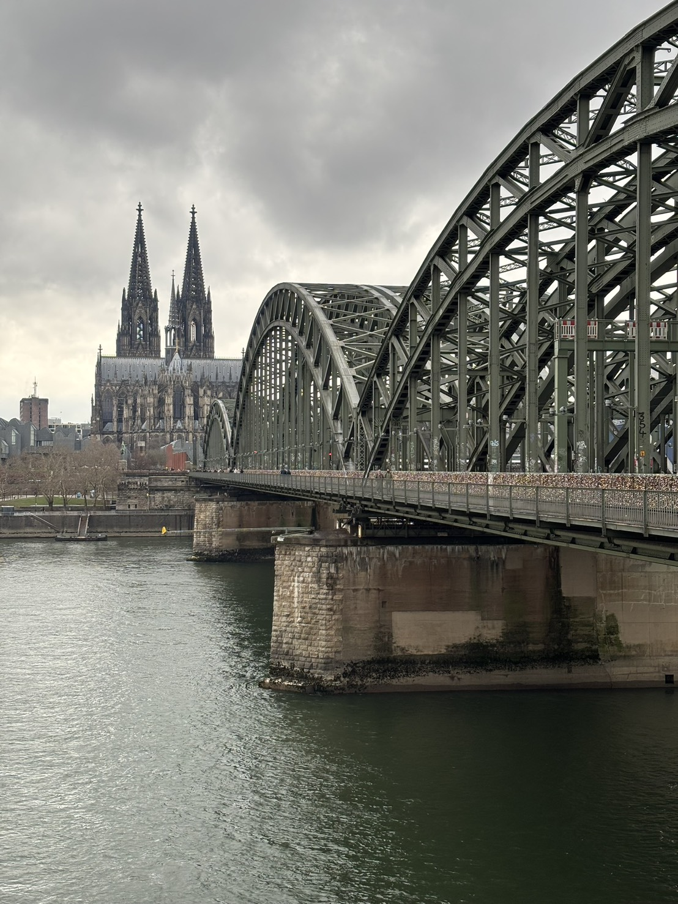

2026年1月1日
去年の振り返りと新年の抱負
去年も、全く同じタイトルでブログを書いたことを覚えている。まさか一年後にドイツで年を越しているなんて、当時は想像もしていなかっただろう。
無事に、12月からドイツでの生活がスタートした。受け入れ先のSimonのグループは、先生もポスドクの方も学生もとても親切で、充実した日々を過ごしている。ただ、クリスマスや正月を海外で一人で過ごすのは少しもの寂しくもあり、でもこれもすごくいい経験だなと思いながら、爆竹の響き渡る正月の真っ昼間に、このブログを書いている。

去年の振り返りとしては、なんとか研究が収束して、プレプリントとして投稿できたことが一番大きなことかなと思う。それと並行して、新しい研究を二つ進めていた。一つは、お気に入りのSchwinger boson法をカゴメ反強磁性体に適用し、さらに摂動論の計算まで進めるもの。もう一つは、Abrikosov fermion法を拡張Kitaev模型に適用し、摂動計算を経て有限温度ダイナミクスを計算するもの。どちらも、いい感じの結果が得られている。3月の日本物理学会（オンライン）では、この二つで連続講演の発表をする予定である。研究生活としては、とても充実した一年だったと言える。
そして何といっても、留学が始まった。Simonのグループは、ほとんどのメンバーが量子情報の研究を行っているようで、この感じだと、私の滞在中の研究課題も量子情報に関わるものになりそうである。当初はスピン系の数値計算の技法を身につけたいと思っていたが、量子情報にも大きな興味があったので、何が来ても楽しめそうだと期待している。これまで量子情報にそこまで詳しくなかったものの、このひと月、グループメンバーの方々が各々の研究を教えてくれたおかげで、少しずつ研究の方向性のようなものが掴めてきた。実際、この年末年始にはmonitored dynamicsのコードを書いて走らせて遊んでみたが、これまでとは少し毛色の違う思考回路を使う感じで、これはこれでとても面白い。とりあえずAmazonで量子情報の電子書籍を購入したので、年始に読み進めて知識をつけていきたい。
今年の抱負は、まずドイツでの研究生活を楽しむこと。帰国後は博士課程卒業に向けたラストスパートになるはずなので、楽しむことを忘れずに、悔いのない研究生活を送りたい。